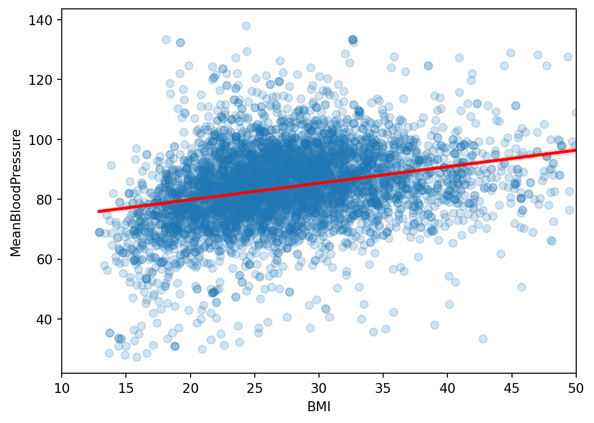
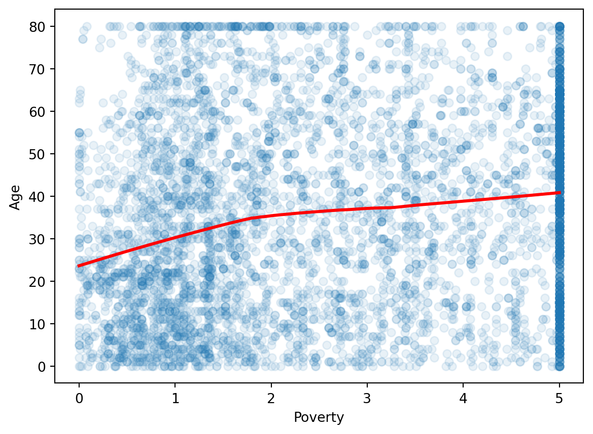
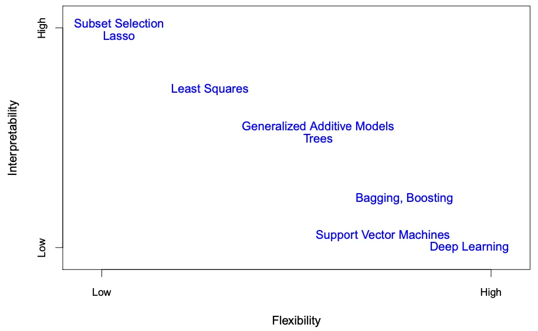

In the second week of class, we will look at linear regression in more depth, and examine the challenge of over-fitting.
3.1 Linear Regression in depth
Last week, we were exposed to the Linear Regression model. Today we will take it apart and look at it carefully.
3.1.1 One predictor
Suppose we just use one predictor, \(Age\) to predict our outcome \(MeanBloodPressure\).
\[
MeanBloodPressure= \beta_0 + \beta_1 \cdot Age
\]
Our model would look like the following like the red line from our Training data:
import pandas as pdimport seaborn as snsimport numpy as npfrom sklearn.model_selection import train_test_splitimport matplotlib.pyplot as pltfrom formulaic import model_matriximport statsmodels.api as smnhanes = pd.read_csv("classroom_data/NHANES.csv")nhanes.drop_duplicates(inplace=True)nhanes['MeanBloodPressure'] = nhanes['BPDiaAve'] + (nhanes['BPSysAve'] - nhanes['BPDiaAve']) /3nhanes_train, nhanes_test = train_test_split(nhanes, test_size=0.2, random_state=42)plt.clf()ax = sns.regplot(y="MeanBloodPressure", x="BMI", data=nhanes_train, lowess=False, scatter_kws={'alpha':0.2}, line_kws={'color':"r"})ax.set_xlim([10, 50])plt.show()

This model is formed by making the the line of best fit determined by the minimum of the sum of squared difference between the observed response (in blue points) and predicted response (in red line). The process of this line fitting is also known as least squares.
We then use the testing data to see how well the model performs.
3.1.2 Assumptions of linear regression
Any model that one uses has some assumptions about the data that allows the model to make good predictions. Note that there are other types of assumptions if your modeling technique is focused on inference.
Linearity of responder-predictor relationship
Outliers
Collinearity of predictors
Predictors less than the number of samples
3.1.3
3.2 Overfitting
3.2.1 Population and Sample
The way we formulate machine learning model is based on some fundamental concepts in inferential statistics. We will refresh this quickly in the context of our problem. Recall the following definitions:
Population: The entire collection of individual units that a researcher is interested to study. For NHANES, this could be the entire US population.
Sample: A smaller collection of individual units that the researcher has selected to study. For NHANES, this could be a random sampling of the US population.
In Machine Learning problems, we often like to take two, non-overlapping samples from the population: the Training Set, and the Test Set. We train our model using the Training Set, which gives us a function \(f()\) that relates the predictors to the outcome. Then, for 2 main use cases:
Classification and Prediction: We use the trained model to classify or predict the outcome using predictors from the Test Set. We look at the Testing Error to evaluate the model.
Inference: We examine the function \(f()\)’s trained values, which are called parameters. Because these parameters are derived from the Training Set, they are an estimated quantity from a sample, similar to other summary statistics like the mean of a sample. Therefore, to say anything about the true population, we have to use statistical tools such as p-values and confidence intervals.
When we look how the model performs in Classification and Prediction on the training and test data, we are asking how generalizable a model is. Usually we want our model to perform well on unseen, testing data that also represent the population.
We saw that in the first exercise, the Training and Testing Error looked different - why?
There is always going to be some variation, because Training and Test are samples from the population, as we discussed above.
The model was trained on the Training Set, so the prediction is going to naturally perform better than data it has never seen before on the Testing Set.
How do we interpret the difference between Training Error and Testing Error?
To see how generalizable a model is, let’s look at a problem in prediction, not classification. The underlying principles of model generalizability applies to both prediction and classification, but it is generally easier to visualize this concept in prediction models.
3.3.1 Underfitting and Overfitting
Let’s take a look at our model in this context:
\[
MeanBloodPressure= \beta_0 + \beta_1 \cdot Age
\]
It turns out that the relationship between Training Error and Testing Error is connected to the Model Complexity.
A model is more complex relative to another model if:
It contains more predictors
The relationship between a predictor and response is fit via a higher order polynomial or smooth function
Let’s look at what happens if we increase the complexity of the model by fitting it with a more smooth function. We use a polynomial function of order 2.
train_err = []test_err = []polynomials =list(range(1, 10))for p_degree in polynomials:if p_degree ==1: y, X = model_matrix("BloodPressure ~ BMI", nhanes_tiny)else: y, X = model_matrix("BloodPressure ~ poly(BMI, degree="+str(p_degree) +")", nhanes_tiny) X_train, X_test, y_train, y_test = train_test_split(X, y, test_size=0.5, random_state=42) model = sm.OLS(y_train, X_train) linear_model = model.fit() train_err.append(np.mean((linear_model.predict(X_train) - y_train.BloodPressure) **2)) test_err.append(np.mean((linear_model.predict(X_test) - y_test.BloodPressure) **2))plt.clf()plt.plot(polynomials, train_err, color="blue", label="Training Error")plt.plot(polynomials, test_err, color="red", label="Testing Error")plt.xlabel('Polynomial Degree')plt.ylabel('Error')plt.legend()plt.show()

As our Polynomial Degree increased, the following happened:
In the linear model, we see that the Training Error is fairly high, and the Testing Error is even higher. This is an example of Underfitting, where our model failed to capture the complexity of the data in both the Training and Testing Set.
After degree 6, we see that the Training Error is low, but the Testing Error is huge! This is an example of Overfitting, in which our model fitted the shape of of the training set so well that it fails to generalize to the testing set.
We want to find a model that is “just right” that doesn’t underfit or overfit the data. Usually, as the model becomes more flexible, the Training Error keeps lowering, and the Testing Error will lower a bit before increasing. It seems that our ideal prediction model is around a polynomial of degree 5 or 6, with the minimal Testing Error.
Here is another illustration of the phenomena, using synthetic controlled data:
On the left shows the Training Data in black dots. Then, three models are displayed: linear regression (orange line), two other models of increasing complexity in blue and green.
On the right shows the training error (grey curve), testing error (red curve), and where each of the three models on the left land in the error rate with their respective colors.
Source: An Introduction to Statistical Learning, Ch. 2, by Gareth James, Daniela Witten, Trevor Hastie, Roebert Tibshirani, Jonathan Taylor.
Hopefully you start to see the importance of examining the Testing Error instead of the Training Error to evaluate our model. A highly flexible data will overfit the model and make it seem like the Training Error is small, but it will not generalize to the Testing data, which will have Testing Error.
3.4 Appendix: Inference
Now let’s examine the function \(f()\)’s trained values, which are called parameters.
3.4.1 Linear Model
For the Linear Model, the model we first fitted was of the following form:
\[
BloodPressure=\beta_0 + \beta_1 \cdot BMI
\]
which is an equation of a line.
\(\beta_0\) is a parameter describing the intercept of the line, and \(\beta_1\) is a parameter describing the slope of the line.
Suppose that from fitting the model on the Training Set, \(\beta_1=2\). That means increasing \(BMI\) by 1 will lead to an increase of \(BloodPressure\) by 2. This measures the strength of association between a variable and the outcome.
Let’s see this in practice:
y, X = model_matrix("BloodPressure ~ BMI", nhanes_tiny)X_train, X_test, y_train, y_test = train_test_split(X, y, test_size=0.5, random_state=42)linear_model = sm.OLS(y_train, X_train).fit()linear_model.summary()
OLS Regression Results
Dep. Variable:
BloodPressure
R-squared:
0.079
Model:
OLS
Adj. R-squared:
0.072
Method:
Least Squares
F-statistic:
11.00
Date:
Fri, 23 Jan 2026
Prob (F-statistic):
0.00118
Time:
20:05:57
Log-Likelihood:
-520.69
No. Observations:
130
AIC:
1045.
Df Residuals:
128
BIC:
1051.
Df Model:
1
Covariance Type:
nonrobust
coef
std err
t
P>|t|
[0.025
0.975]
Intercept
69.1563
4.805
14.394
0.000
59.650
78.663
BMI
0.5456
0.164
3.317
0.001
0.220
0.871
Omnibus:
11.458
Durbin-Watson:
1.932
Prob(Omnibus):
0.003
Jarque-Bera (JB):
25.824
Skew:
-0.239
Prob(JB):
2.47e-06
Kurtosis:
5.131
Cond. No.
120.
Notes: [1] Standard Errors assume that the covariance matrix of the errors is correctly specified.
Based on the output, \(\beta_0=69\), \(\beta_1=.55\). We also see associated standard errors, p-values, and confidence intervals. This is necessarily to report and interpret because we derive these parameters based on a sample of the data (train or test set), so there are statistical uncertainties associated with them. For instance, the 95% confidence interval of true population parameter will fall between (.22, .87).
3.5 Appendix
Flexibility vs. Interpretability of models

Source: An Introduction to Statistical Learning, Ch. 2, by Gareth James, Daniela Witten, Trevor Hastie, Roebert Tibshirani, Jonathan Taylor
3.6
3.6.0.1 Correlations and Interactions
Besides looking at the single predictors vs. the response, we also need to how the predictors relate to each other and with the response:
Some predictors may be highly correlated with each other, so adding them to the model doesn’t give the model more information to work with.
It is possible that multiple predictors can have an synergistic effect on the outcome; their effect on the outcome occurs jointly - this is called an Interaction.
In the homework exercise you will do some data visualization work to see if can find some patterns of correlations and interactions in the data. Note that these trends are not mutually exclusive: Correlation is about how predictors X and Y relate to each other; Interaction is about how predictors X and Y together affect Z (the outcome).